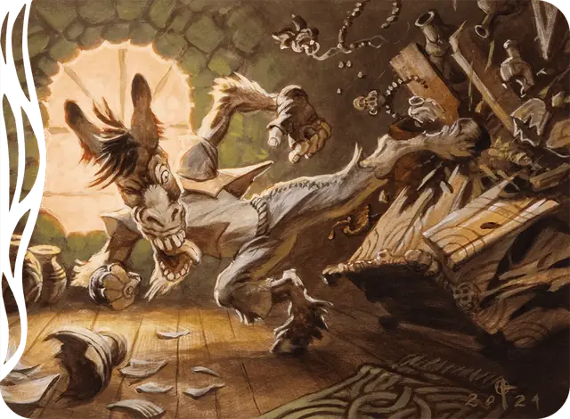

Ноггл-грабитель
Noggle Ransacker
Маленькая Фея, Хаотичная Нейтральная

Класс Защиты 12 Инициатива +2 (12)
Хиты 13 (3к6 + 3)
Скорость 30 футов
| мод | спас | ||
|---|---|---|---|
| СИЛ | 14 | +2 | +2 |
| ЛОВ | 15 | +2 | +2 |
| ТЕЛ | 13 | +1 | +1 |
| мод | спас | ||
|---|---|---|---|
| ИНТ | 8 | −1 | −1 |
| МДР | 10 | +0 | +0 |
| ХАР | 12 | +1 | +1 |
Чувства Тёмное зрение 60 футов, пассивное Восприятие 10
Языки Общий, Сильван
Опасность 1/4 (50 опыта; БВ +2)
Особенности
Осадное чудовище. Ноггл наносит двойной урон объектам и постройкам.
Действия
Замах саботажника. Бросок рукопашной атаки: +4, досягаемость 5 фт. Попадание: 6 (1к8 + 2) Рубящего урона. Если цель носит доспех, она подвергается следующему эффекту. Спасбросок Ловкости: Сл 12. Провал: Доспех получает штраф –1 к своему КЗ. Цель может действием убрать штраф со своих доспехов.
Бонусные действия
Ловкий побег. Ноггл совершает действие Затаивание или Отход.
Бонус мастерства +2
Среда обитания Страна фей
Сокровища Личные
Ногглы
Ослоподобные любители хаоса
Ногглы — двуногие, похожие на ослов Феи, которые обожают воровство и проказы. Они крадут у других существ не из нужды, а из принципа. Принцип этот можно выразить расхожим сильванским присловьем, которое примерно переводится как «это моё!». Водятся ноглы только в Шэдоумуре, где бродят и сеют хаос.
Ногглы не обворовывают — они разграбляют. Несмотря на всю свою бесцеремонность, многие ногглы при этом носят маски, банданы или нелепые личины, чтобы скрывать своё настоящее лицо.